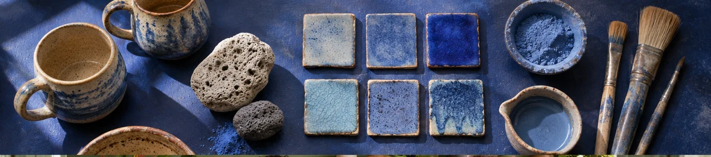

Escolha a cor que vai para o forno.
Traga uma peça já queimada ou escolha uma base da oficina. Os esmaltes aparecem como amostras para comparar.
Compor a queima
Retirada após o forno
A cor muda com a queima. A oficina combina a retirada depois de confirmar o ciclo do forno.